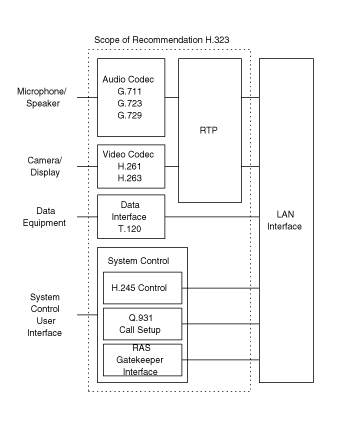

H.323: Обзор архитектуры
Автор: Руслан
Попов
Переводил для себя :)
Рекомендация H.323 описывает
технические требования для услуг по передачи аудио и видео по сетям не
гарантирующим качество сервиса. H.323 ссылается на спецификацию T.120 для
передачи данных. В область рассмотрения H.323 не входят сами сети или
транспортный уровень, который может быть использован для соединения множества
сетей. H.323 рассматривает только Switched Circuit Network (SCN). На этом
рисунке показана система H.323 с её компонентами.
H.323 определяет четыре основных компонента для сетевых систем
коммуникаций:
- Терминал.
- Шлюз (Gateway).
- Контроллёр зоны
(GateKeeper).
- Сервер управления
конференциями (MCU).

Терминалы
Терминалы являются клиентскими конечными устройствами в сетях, которые
предоставляют двунаправленную связь в реальном времени. Рисунок описывает
компоненты терминала. Все терминалы должны поддерживать передачу голоса и,
опционально, передачу видео и данных. H.323 определяет режимы работы для
взаимодействия различных типов терминалов. Он является основным стандартом для
следующего поколения IP телефонов, терминалов аудиоконференций и технологий
видоконференций.
Все H.323 терминалы
должны поддерживать:
- Протокол H.245 для согласования характеристик
канала и его использования.
- Протокол Q.931 для сигнализации и настройки
соединения.
- Протокол RAS
(Registration/Admission/Status)
для взаимодействия с контроллёром зоны.
- Протокол RTP/RTCP для "нарезки" аудио и видео
пакетов.
Опциональными компонентами в H.323 терминалах
являются видеокодеки, протоколы T.120 обмена данными и возможность работы с
серверами управления конференциями.
Шлюзы
Шлюз
является необязательным элементом в H.323 соединении. Шлюзы предоставляют много
услуг, в основном услугу преобразования между конечными устройствами H.323 и
терминалами других типов. Эта функция включает в себя преобразование между
форматами передачи (т.е., H.225 в H.221) и между процедурами соединения (т.е.,
H.245 в H.242). Дополнительно к этому, шлюзы могут выполнять преобразования
между аудио|видео кодеками, настройку и прекращение соединения на обоих концах
линии (LAN или SCN). Рисунок даёт представление о шлюзе.
В общем случае, целью шлюза является отражение
характеристик конечного LAN устройства на конечное SCN устройство и наоборот.
Основное назначение шлюза:
- Установление соединения с аналоговыми PSTN
терминалами.
- Установление соединения с удаленными H.320-совместимыми
терминалами по ISDN.
- Установление соединения с удаленными H.324-совместимыми
терминалами по PSTN.
Шлюзы не нужны, если
отсутствует необходимость в соединенях с другими сетями, так как конечные
устройства могут взаимодействовать напрямую в пределах одной сети. Терминалы
взаимодействуют с шлюзом по протоколам H.245 и Q.931.
С применением
соответствующих транскодеров, H.323 терминалы могут поддерживать H.310-, H.321-,
H.322- и V.70-совместимые терминалы.
Множество функций шлюза "брошены" на
разработчика. Например, действительное количество H.323 терминалов, которые
могут работать через шлюз не являются предметом стандартизации. Аналогично,
количество SCN соединений, количество поддерживаемых одновременных независимых
соединений, функции преобразования аудио|видео|данных и реализация функций
многоточечных соединений оставлено на разработчике шлюза. Включив технологию
шлюза в спецификацию H.323, ITU позиционировала H.323 как основу, которая
объединяет стандартные конечные устройства.
Контроллёры
зон
Контроллёр зоны является основным компонентом H.323 сети. Он
обрабатывает все соединения своей зоны и предоставляет услуги по управлению
соединениями зарегистрированных конечных устройств. Во многих случаях,
контроллёр зоны работает как виртуальный коммутатор.

Контроллёр зоны выполняет две
важные функции управления соединениями. Первая —
преобразование адресов (сетевые псевдонимы для терминалов и шлюзов в IP или IPX
адреса), как указано в спецификации RAS. Вторая — управление
полосой пропускания, которое также описано в спецификации RAS. Например, если
администратор ограничил количество одновременных соединений по сети,
контроллёр зоны может отклонять попытки
установить дополнительные соединения. Таким образом, остальная полоса
пропускания отдается для электронной почты, передачи файлов и для других сетевых
протоколов. Коллекция из терминалов, шлюзов и сервера управления конференциями
называется H.323 зоной.
Опциональной, но значимой характеристикой
контроллёра зоны является возможность
маршрутизации H.323 соединений. Маршрутизиция соединений через контроллёр зоны даёт больший контроль над ними. Данная
возможность нужна поставщикам услуг для организации биллинга соединений
проходящих через их сеть. Также это позволяет переключить соединение на другое
конечное устройство, если оригинальное недоступно. Контроллёр зоны, поддерживающий маршрутизацию H.323,
поможет при балансировании нагрузки между несколькими шлюзами.
Так как
контроллёр зоны логически разделён с
конечными устройствами, производители могут встраивать его функциональность в
физическую реализацию шлюзов и сервера управления
конференциями.
Контроллёр зоны не
является обязательным элементом H.323 системы. Тем не менее, при его наличии
терминалы должны использовать предоставляемые им услуги. Спецификация RAS
определяет их как: преобразование адресов, управление доступом, управление
полосой пропускания и управление зоной.
Контроллёр
зоны также может участвовать в многоточечных конференциях.
Для этого пользователи должны использовать контроллёр
зоны для работы с H.245 сигнализацией. При переключении
соединения типа "точка-точка" в многоточечный режим, контроллёр зоны может перенаправлять H.245
сигнализацию на сервер управления конференциями (MC). Обратите внимание на то,
что контроллёр зоны не обрабатывает
H.245 сигнализацию, он просто передаёт её между терминалами и сервером
управления конференциями.
Сеть с шлюзом может также использовать
контроллёр зоны для преобразования
входящие E.164 адреса в транспортные.
Список обязательных
функций:
- Преобразование
адреса
Преобразование псевдонима в транспортный адрес с помощью
таблицы, которая обновляется благодаря сообщениям о регистрации. Допустимы
другие методы обновления содержимого таблицы.
- Управление
доступом
Авторизация сетевого доступа с помощью сообщений запроса (Request - ARQ), подтверждения (Accept - ARC) и отклонения (Reject - ARJ). Доступ может
основываться на авторизации соединения, полосе пропускания или на других
критериях. Также эта функция может быть "заглушкой", которая разрешает все
соединения.
- Контроль полосы
пропускания
Поддержка сообщений запроса (BRQ), подтверждения (BRC) и отклонения (BRJ) для полосы пропускания.
Также эта функция может быть "заглушкой", которая
разрешает все запросы на изменение полосы пропускания.
- Управление
зоной
Контроллёр зоны
предоставляет вышеописанные функции для терминалов, серверов управления
конференциями и шлюзов, которые зарегистрированы в его зоне.
Список необязательных функций:
- Управление сигнализацией
соединения
В соединении типа "точка-точка", контроллёр зоны может обрабатывать Q.931
сигнализацию. Дополнительно, контроллёр зоны может пересылать напрямую Q.931 сигнализацию от одного конечного
устройства другому.
- Авторизация
соединения
Контроллёр зоны
может отклонять соединение от терминала, основываясь на спецификации Q.931.
Причинами оклонения могут быть (но не ограничиваются этим) неразрешённый
доступ от|к определённому терминалу или шлюзу, неразрешённый доступ в
определённый период времени. Критерий определения результата авторизации не
входит в область рассмотрения спецификации H.323.
- Управление полосой
пропускания
Контроллёр зоны
может отклонять соединения от терминала, если определяет, что требуемая полоса
пропускания в настоящий момент недоступна. Данная функция также работает во
время активного соединения, если терминал требует определённой полосы
пропускания. Критерий определения доступности требуемой
полосы пропускания авторизации не входит в область рассмотрения спецификации
H.323.
- Управление
соединением
Контроллёр зоны
может поддерживать список исходящих H.323 соединений для определения занятости
определённого терминала или для предоставления информации для функции
управления полосой пропускания.
Сервер управления конференциями
(MCU)
Сервер MCU
поддерживают соединения между тремя и более конечными устройствами. По
спецификации H.323 сервер MCU состоит из непосредственно контроллёра (MC)
и нуля или большего количества процессоров соединений (MP). MC обеспечивает
H.245 согласование между всеми терминалами для определения общих характеристик
обработки аудио|видео сигналов. MC также управляет ресурсами соединения,
определяя, какой аудио и видео поток, если таковой имеется, будет
многоточечным.
MC напрямую не взаимодействует ни с какими медиа потоками.
Этим занимается MP, который смешивает, переключает и обрабатывает потоки
аудио|видео|данных. MC и MP характеристики могут сосуществовать в отдельном
компоненте или быть частью какого-нибудь H.323 компонента.
Многоточечные соединения
Возможность установления
многоточечных конференций обеспечивается множеством методом и конфигураций
H.323. Рекомендация для этого использует термины централизованных и децентрализованных конференций, как показано
на рисунки.
Централизованные многоточечные конференции (ЦМК) требуют
наличия серверов MCU. Все терминалы обмениваются потоком с сервером MCU, как в
соединении типа "точка-точка". MC обычно управляет соединением с помощью функций
управления H.245, которые определяют возможности каждого терминала. MP
производит микширование аудио сигнала, распределение данных и выполняет функции
переключения|микширования видео, в итоге преобразованный поток отсылается
конкретному конечному устройству. Также MP может производить преобразование
между различными кодеками и битрейтами и обеспечивать многоадресную рассылку
обработанного видео. Обычный сервер MCU, поддерживающий ЦМК, состоит из MC и
аудио|видео|дата процессоров соединений (MP).
Децентрализованные
многоточечные конференции (ДМК) используют многоадресную (multicast) технологию.
Взаимодействующие H.323 терминалы рассылают аудио|видео между собой без
использования сервера MCU. Следует отметить, что управление данными осуществляет
сервер MCU, а H.245 сигнализация по прежнему передается в режиме точка-точка на
MC.
Терминалы, получающие данные, отвечают за обработку одновременных
аудио|видео потоков. Терминалы используют H.245 сигнализацию для оповещения MC о
количестве одновременных аудио и видео потоков, которые они могут декодировать.
Количество одновременных соединений одного терминала не ограничивает количество
аудио и видео потоков в многоточечном соединении. Также MP может предоставлять
выбор видеопотока и микширование аудиопотока в ДМК.
Гибридные
многоточечные соединения используют комбинацию централизованных и
децентрализованных характеристик. H.245 сигнализация и аудио либо видео потоки
обрабатываются сервером MCU в виде "точка-точка". Оставшиеся потоки (аудио или
видео) передаются взаимодействующим H.323 терминалам.
Преимущество
централизованного соединения заключается в том, что все H.323 терминалы
поддерживают соединение типа "точка-точка". Сервер MCU просто создает множество
соединений типа "точка-точка" с участниками конференции и не требует специальной
поддержки от сети. Аналогично, сервер MCU может принимать множество соединений
типа "точка-точка", микшировать аудио и переключать видео и выдавать
мультикастовый поток, сохраняя полосу пропускания сети.
H.323 также
поддерживает смешанные многоточечные конференции, в которых одни терминалы
находятся в централизованном соединении, а другие — в децентрализованном. В этом случае
сервер MCU становится мостом связывающим эти типы соединений. Терминал не знает
о смешенной природе соединения, ему важен только режим в котором он
работает.
Поддерживая уникастовые и мультикастовые подходы, H.323
разделяет текущее поколение и будущие сетевые технологии. Мультикаст более
эффективно использует полосу пропускания сети, но накладывает дополнительные
вычислительные на терминалы. Также для мультикаста требуется поддержка в сетевых
маршрутизаторах и коммутаторах.
MC может находиться в контроллёре зоны,
шлюзе, терминале или сервере управления конференциями.